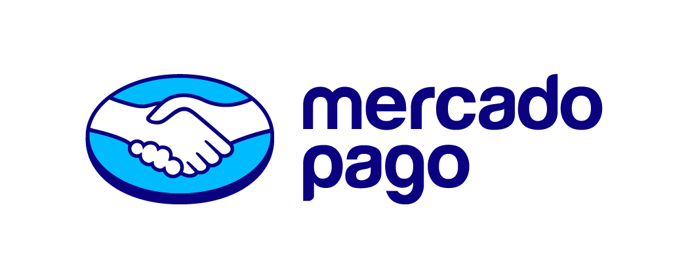

EL FORMATO
PNG y PDF.
Elegí cómo compartir tu propuesta y explorá más diseños según lo que quieras comunicar.

MeliESPACIO DEL EQUIPO · v0.1.1
De una buena conversación a una propuesta que cada asesor puede hacer suya. Con más opciones para preparar, comparar y compartir.
Ingresás con tu correo verificado.
01 / EL ESPACIO PARA IR UN POCO MÁS ALLÁ
La misma idea de una propuesta clara, con herramientas para el trabajo comercial de todos los días.
EL FORMATO
Elegí cómo compartir tu propuesta y explorá más diseños según lo que quieras comunicar.
EL IDIOMA
Generá una pieza en un solo idioma para que las condiciones sean más cercanas a tu cliente.
LAS CONDICIONES
Trabajá con el maestro interno y personalizá las condiciones que correspondan a cada propuesta.
LO QUE MOSTRÁS
Activá sólo los medios y las alternativas de financiación que sumen a esa conversación.
ANTES DE COMPARTIR
Revisá actual versus propuesta y otras opciones. Elegí qué información verá el cliente.
PARA VOLVER A USAR
Guardá propuestas y maestros en tu navegador para retomarlos y seguir ajustando los detalles.
02 / ELEGÍ CÓMO CONTINUAR
Si tu correo termina en @mercadolibre.com, ingresá y completá la verificación de identidad. Después, cada asesor prepara sus propuestas con sus propios datos.
Abrir el generador del equipo Acceso con correo verificadoPodés solicitar acceso para que Martin revise tu caso antes de habilitarlo.
Solicitar acceso por Gmail Se abre Gmail en el navegador. Revisá el borrador y tocá Enviar. El acceso requiere aprobación.Mientras tanto, podés seguir creando propuestas desde la versión inicial.
03 / LAS IDEAS TAMBIÉN SE CONSTRUYEN
Creado por Martin Yu. En GitHub podés conocer el código de la versión pública, seguir sus cambios y aportar a lo que viene.
Un proyecto nacido del trabajo real, que sigue creciendo con cada mejora y cada conversación.
Ver el código públicoEl repositorio público reúne la versión inicial y la presentación del proyecto. Las condiciones internas del equipo se mantienen en su espacio.
UNA MEJORA PUEDE EMPEZAR CON OTRA CONVERSACIÓN